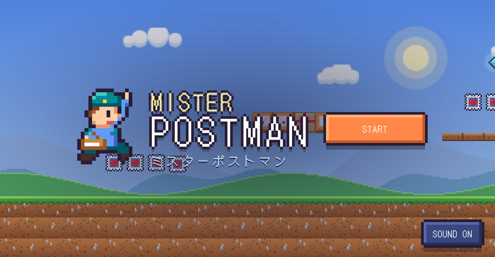
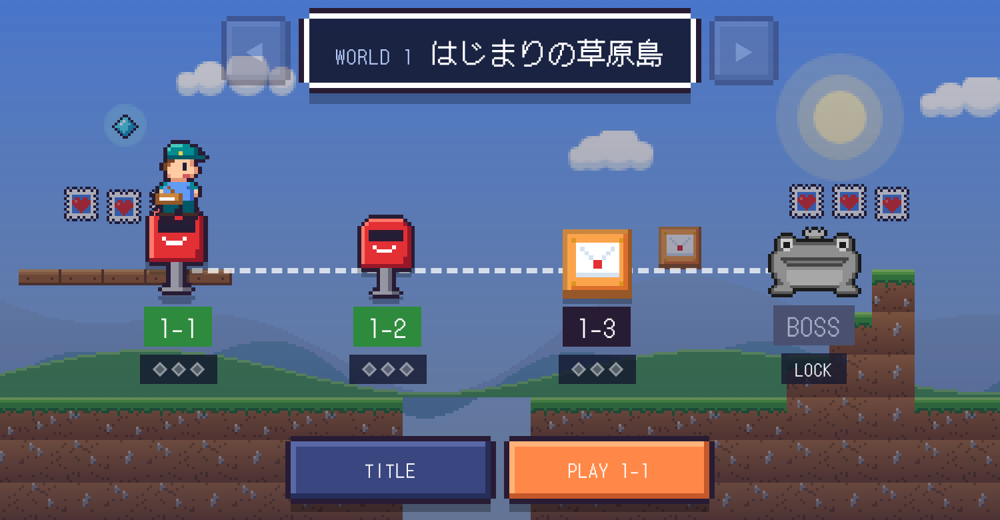
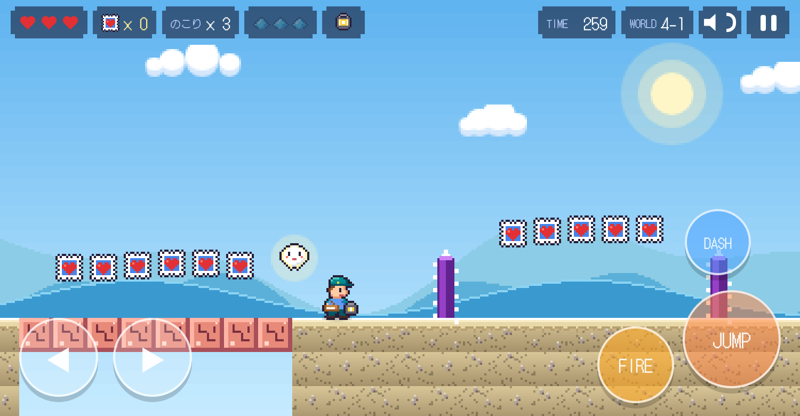

ミスターポストマン
MISTER POSTMAN

空に浮かぶ「ソラツギ諸島」は、ニジ灯台の光でつながっていました。
ある日、クモリ男爵が灯台の燃料「ヒカリのかけら」をうばい、島から色が消えてしまいます。
島をつなぐ光の橋も消え、手紙が届けられません。
「手紙を待っている人がいる。ぼくが届ける！」
あそぶ場所（iPhone の Safari で開く）
https://tmgalaxy330-byte.github.io/make-games/
カメラで QR コードを読むと開けます。はじめての準備は次のページを見てね。
はじめる前に iPhone の準備
1. ホーム画面に追加する（インターネットにつながっているときに）
- Safari で上のアドレスを開きます（QR コードを読んでも OK）。
- 共有ボタン（四角から上向きの矢印）をタップします。見つからないときは、「…」ボタンをタップしてから「共有」を選びます。
- 一覧から「ホーム画面に追加」を選び、「追加」をタップします。
（一覧にないときは、いちばん下の「アクションを編集」から追加できます。「Webアプリとして開く」が出たら、オンのままにします。）
- ホーム画面にできた ポストマンのアイコン から起動します。
- タイトル画面が出るまで待ちます。これでゲームが iPhone の中に保存されます。
2. 飛行機の中で遊ぶとき
- 乗る前の日までに、上の「ホーム画面に追加」をすませて 1回起動しておきます。
- 機内モードにしてからアイコンを開き、ちゃんと動くか確かめておくと安心です。
- 機内ではインターネットなしで、最初から最後まで遊べます。
！ 注意
iPhone は、長いあいだ開かなかったサイトのデータを消すことがあります。
出発の前日にもう一度アイコンを開いておくと安心です。
もしオフラインで開けなかったら、インターネットにつながる場所で1回開き直してください。
3. 遊ぶときのポイント
- 画面は横向きで遊びます。縦にすると「横にしてね」と出ます。
- 音が出ないときは、iPhone の消音スイッチ（マナーモード）と音量を確かめてください。
- 記録（セーブ）は自動です。タイトル画面の CONTINUE で続きから遊べます。
- 記録はその iPhone だけに残ります。べつの iPhone には引きつげません。
- ほかのアプリに切りかえると、ゲームは自動で一時停止します。
クレジット ゲーム・絵・音楽：オリジナル作品 ／ フォント：DotGothic16（SIL Open Font License 1.1）／ 説明書の本文：IPA ゴシック（IPA フォントライセンス v1.0）
ルール
ゴールは「ポスト」
 右へ進んで、ステージの最後にある赤いポストにさわると配達完了（クリア）。
花火と虹でお祝いされます。各ワールドの最後にはボスが待っています。
右へ進んで、ステージの最後にある赤いポストにさわると配達完了（クリア）。
花火と虹でお祝いされます。各ワールドの最後にはボスが待っています。
ステージのとちゅうにはチェックポイントがあり、ミスしてもそこから始められます。
体力とミス
- 体力はハート3つ。敵に横からさわったり、トゲに当たったりすると減ります。
- ハートが0になる、穴に落ちる、時間切れになるとミス。のこり人数が1つ減ります。
- のこり人数が0のときにミスすると GAME OVER。RETRY でもう一度、MAP でマップにもどれます。クリアしたステージの記録は消えません。
- ダメージを受けたあと約1.5秒は点めつして、敵に当たりません。
ダメージを受けたときの順番
当たると、上から順に1つだけなくなります。
| 順番 | 持っているもの | 当たったとき |
|---|
| 1 |  大きな配達カバン 大きな配達カバン | カバンがやぶれる（ほかは無事） |
| 2 |  パワーアップ パワーアップ | パワーアップがなくなる（ハートは無事） |
| 3 | 何も持っていない | ハートが1つ減る |
例：カバンとバネぐつを両方持っていれば、2回当たってもハートは減りません。ただし穴に落ちたら何を持っていてもミスです。
時間制限
ステージにはのこり時間があります。のこり 50秒になると合図の音が鳴り、
音楽が速くなります。あわてずに、でも急いでポストへ！
敵のたおし方
多くの敵は上からふむとたおせます。ふむときに JUMP を押していると、高くはね上がります。
トゲのある敵はふめないので、よけるか、ランタンの光の玉でたおします。
ワールドと攻略のこつ


左：マップ画面。◀ ▶ でワールドを選び、PLAY で出発。 右：ワールド4。トゲの柱やくずれる足場が出てきます。
ワールド
| 1 | はじまりの草原島 ボス：大ガエル ゲコドン |
| 2 | カラカラ砂丘島 ボス：砂ムカデ ザラザラ |
| 3 | ツララ雪原島 ボス：雪だるま将軍 |
| 4 | シズク海底島 ボス：大ダコ ヌルリン（水の中では JUMP で泳ぐ） |
| 5 | クモリ城 ボス：クモリ男爵 |
| ？ | ……クモリ男爵をたおしたあと、差出人のない手紙が届くかもしれない。 |
ワールド1〜3はやさしめ。ワールド4からは、タイミングをあわせる場所が増えて少しむずかしくなります。ステージはクリアすると色がもどります。
攻略のこつ
- ダッシュは近道用。ダッシュしなくても、全部のステージをクリアできます。
- パタクモの橋は DASH を OFF にして、1ぴきずつ「ふむ → JUMP」とリズムよく。
- 落ちそうなときは、空中で反対向きを押してブレーキ。
- 手紙ブロックの中身はいつも同じ。カバンやスカーフのある場所を覚えると楽になります。
- ボスは動きにくせがあります。まずはよけながらよく見るのが近道。